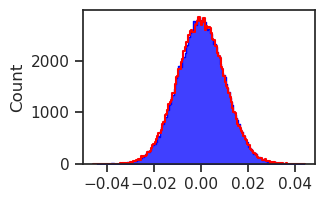
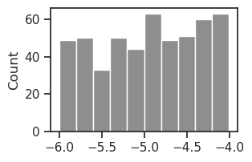

(28) debug — why different from pvae?#
Motivation: host = mach, device = cuda:1
Show code cell source
# HIDE CODE
import os, sys
from IPython.display import display
# tmp & extras dir
git_dir = os.path.join(os.environ['HOME'], 'Dropbox/git')
extras_dir = os.path.join(git_dir, 'jb-vae/_extras')
fig_base_dir = os.path.join(git_dir, 'jb-vae/figs')
tmp_dir = os.path.join(git_dir, 'jb-vae/tmp')
# GitHub
sys.path.insert(0, os.path.join(git_dir, '_IterativeVAE'))
from figures.fighelper import *
from vae.train_vae import *
# warnings, tqdm, & style
warnings.filterwarnings('ignore', category=DeprecationWarning)
warnings.filterwarnings('ignore', category=FutureWarning)
warnings.filterwarnings('ignore', category=UserWarning)
from rich.jupyter import print
%matplotlib inline
set_style()
from base.utils_model import load_quick
device_idx = 1
device = f'cuda:{device_idx}'
Init Iterative PVAE#
Get configs#
model_type = 'poisson'
cfg_vae, cfg_tr = default_configs('vH16', model_type, 'lin|lin')
cfg_vae['init_scale'] = 1e-2
cfg_vae['seq_len'] = 1
cfg_tr['lr'] = 2e-3
cfg_tr['epochs'] = 3000
cfg_tr['batch_size'] = 1000
cfg_tr['kl_beta'] = 1.0
print(f"VAE:\n{cfg_vae}\n\nTrainer:\n{cfg_tr}")
VAE: {'dataset': 'vH16', 'n_latents': 512, 'prior_clamp': -4, 'enc_type': 'lin', 'dec_type': 'lin', 'enc_bias': False, 'dec_bias': False, 'init_dist': 'normal', 'init_scale': 0.01, 'seq_len': 1} Trainer: {'batch_size': 1000, 'epochs': 3000, 'optimizer_kws': {'weight_decay': 0.0}, 'grad_clip': 500, 'kl_const_portion': 0.0, 'lr': 0.002, 'kl_beta': 1.0}
Make model + trainer#
tr_ipvae = TrainerVAE(
HIPVAE(CFG_CLASSES[model_type](**cfg_vae)),
ConfigTrainVAE(**cfg_tr),
device=device,
)
tr_ipvae.model.print()
print(f"{tr_ipvae.model.cfg.name()}\n{tr_ipvae.cfg.name()}_({tr_ipvae.model.timestamp})\n")
tr_ipvae.show_schedules()
+-------------+------------+ | Module Name | Num Params | +-------------+------------+ | HIPVAE | 262.7 K | | ——— | ——— | | layers.L_0 | 262.7 K | +-------------+------------+
poisson_uniform_c(-4)_vH16_t-1_z-[512]_<lin|lin> mc_b1000-ep3000-lr(0.002)_beta(1:0x0.5)_temp(0.05:lin-0.5)_gr(500)_(2024_08_28,12:43)
print(vars(tr_ipvae.model.cfg))
{ 'prior_log_dist': 'uniform', 'prior_clamp': -4, 'hard_fwd': False, 'exc_only': False, 'type': 'poisson', 'n_ch': 32, 'seq_len': 1, 'n_latents': [512], 'lateral_ker_sz': [None], 'enc_type': 'lin', 'dec_type': 'lin', 'enc_bias': False, 'dec_bias': False, 'enc_norm': False, 'dec_norm': False, 'dataset': 'vH16', 'input_sz': 16, 'fit_prior': True, 'use_bn': False, 'use_se': True, 'res_eps': 1.0, 'init_dist': 'normal', 'init_scale': 0.01, 'activation_fn': 'swish', 'seed': 0, 'base_dir': '/home/hadi/Projects/PoissonVAE', 'data_dir': '/home/hadi/Datasets', 'runs_dir': '/home/hadi/Projects/PoissonVAE/runs/poisson_uniform_c(-4)_vH16_t-1_z-[512]_<lin|lin>', 'mods_dir': '/home/hadi/Projects/PoissonVAE/models/poisson_uniform_c(-4)_vH16_t-1_z-[512]_<lin|lin>', 'results_dir': '/home/hadi/Projects/PoissonVAE/results' }
print(vars(tr_ipvae.cfg))
{ 'lr': 0.002, 'epochs': 3000, 'batch_size': 1000, 'file_name': None, 'warm_restart': 0, 'warmup_epochs': 5, 'optimizer': 'adamax_fast', 'optimizer_kws': {'weight_decay': 0.0, 'betas': (0.9, 0.999), 'eps': 1e-08}, 'scheduler_type': 'cosine', 'scheduler_kws': {'T_max': 2995.0, 'eta_min': 1e-05}, 'ema_rate': None, 'grad_clip': 500, 'chkpt_freq': 50, 'eval_freq': 20, 'log_freq': 10, 'use_amp': False, 'method': 'mc', 'kl_beta': 1.0, 'kl_beta_min': 0.0001, 'kl_balancer': None, 'kl_anneal_cycles': 0, 'kl_anneal_portion': 0.5, 'kl_const_portion': 0.0, 'lambda_anneal': False, 'lambda_init': 0.0, 'lambda_norm': 0.0, 'temp_anneal_portion': 0.5, 'temp_anneal_type': 'lin', 'temp_start': 1.0, 'temp_stop': 0.05 }
self = tr_ipvae
x = next(iter(self.dl_vld))[0]
dist, kl, recon_batch = self._fun(x)
kl.shape, recon_batch.shape
(torch.Size([1000, 1, 512]), torch.Size([1000, 1]))
kl_batch = torch.sum(kl, dim=2)
kl_balanced = torch.mean(kl_batch, dim=1)
kl_batch.shape, kl_balanced.shape
(torch.Size([1000, 1]), torch.Size([1000]))
(kl_batch.ravel() - kl_balanced).abs().sum()
tensor(0., device='cuda:1', grad_fn=<SumBackward0>)
(recon_batch.ravel() - torch.mean(recon_batch, dim=1)).abs().sum()
tensor(0., device='cuda:1', grad_fn=<SumBackward0>)
recon_batch.mean(), kl_batch.mean()
(tensor(195.9985, device='cuda:1', grad_fn=<MeanBackward0>),
tensor(0.0428, device='cuda:1', grad_fn=<MeanBackward0>))
loss_batch = (
torch.mean(recon_batch, dim=1) +
kl_balanced.mul(1.0)
)
loss = torch.mean(loss_batch)
loss
tensor(196.0414, device='cuda:1', grad_fn=<MeanBackward0>)
sns.histplot(tonp(self.model.input_layer.fc_dec.weight.data).ravel(), element='step', color='b')
sns.histplot(tonp(self.model.input_layer.fc_enc.weight.data).ravel(), element='step', fill=False, color='r');

self.model.input_layer
PoissonLayer(dim=512, input_dim=16, temp=1, eps=0, n_exp=263)
self.model.input_layer.temp
tensor(1., device='cuda:1')
sns.histplot(tonp(self.model.input_layer.log_rate.ravel()), color='dimgrey');

x = next(iter(self.dl_vld))[0]
with torch.inference_mode():
output = self.model(x)
output = output.stack()
list(output)
['recon', 'dist', 'spks', 'ff', 'fb', 'loss_kl', 'loss_recon']
dist = output['dist']['T_0']['L_0']
dist.rate
tensor([[0.0090, 0.0052, 0.0022, ..., 0.0206, 0.0093, 0.0073],
[0.0070, 0.0033, 0.0024, ..., 0.0174, 0.0062, 0.0061],
[0.0097, 0.0049, 0.0027, ..., 0.0212, 0.0081, 0.0072],
...,
[0.0093, 0.0034, 0.0030, ..., 0.0139, 0.0090, 0.0073],
[0.0076, 0.0044, 0.0022, ..., 0.0119, 0.0081, 0.0066],
[0.0084, 0.0051, 0.0024, ..., 0.0140, 0.0090, 0.0046]],
device='cuda:1')
dist.rate[123]
tensor([0.0083, 0.0046, 0.0026, 0.0027, 0.0136, 0.0145, 0.0071, 0.0125, 0.0064,
0.0127, 0.0105, 0.0030, 0.0140, 0.0027, 0.0147, 0.0030, 0.0149, 0.0088,
0.0056, 0.0056, 0.0022, 0.0028, 0.0098, 0.0097, 0.0058, 0.0056, 0.0148,
0.0148, 0.0096, 0.0075, 0.0093, 0.0052, 0.0035, 0.0083, 0.0065, 0.0055,
0.0078, 0.0116, 0.0198, 0.0060, 0.0074, 0.0050, 0.0082, 0.0042, 0.0069,
0.0139, 0.0039, 0.0076, 0.0037, 0.0108, 0.0087, 0.0050, 0.0120, 0.0027,
0.0052, 0.0041, 0.0048, 0.0137, 0.0039, 0.0025, 0.0050, 0.0041, 0.0035,
0.0068, 0.0053, 0.0103, 0.0042, 0.0160, 0.0056, 0.0028, 0.0079, 0.0142,
0.0061, 0.0174, 0.0094, 0.0051, 0.0091, 0.0148, 0.0184, 0.0050, 0.0102,
0.0078, 0.0062, 0.0105, 0.0067, 0.0103, 0.0107, 0.0139, 0.0031, 0.0104,
0.0145, 0.0226, 0.0026, 0.0114, 0.0165, 0.0162, 0.0040, 0.0147, 0.0165,
0.0124, 0.0060, 0.0042, 0.0150, 0.0130, 0.0044, 0.0068, 0.0072, 0.0109,
0.0028, 0.0130, 0.0071, 0.0032, 0.0103, 0.0031, 0.0144, 0.0056, 0.0200,
0.0024, 0.0132, 0.0026, 0.0048, 0.0054, 0.0166, 0.0084, 0.0044, 0.0042,
0.0125, 0.0037, 0.0040, 0.0042, 0.0065, 0.0109, 0.0121, 0.0092, 0.0045,
0.0056, 0.0110, 0.0107, 0.0163, 0.0051, 0.0110, 0.0080, 0.0127, 0.0034,
0.0054, 0.0151, 0.0027, 0.0147, 0.0049, 0.0154, 0.0024, 0.0053, 0.0036,
0.0084, 0.0045, 0.0101, 0.0166, 0.0039, 0.0151, 0.0023, 0.0050, 0.0057,
0.0046, 0.0197, 0.0111, 0.0045, 0.0038, 0.0139, 0.0126, 0.0066, 0.0050,
0.0196, 0.0055, 0.0040, 0.0108, 0.0133, 0.0124, 0.0184, 0.0165, 0.0151,
0.0198, 0.0036, 0.0031, 0.0092, 0.0081, 0.0030, 0.0054, 0.0137, 0.0075,
0.0063, 0.0052, 0.0074, 0.0055, 0.0030, 0.0166, 0.0093, 0.0030, 0.0115,
0.0164, 0.0117, 0.0044, 0.0042, 0.0091, 0.0036, 0.0074, 0.0102, 0.0180,
0.0032, 0.0067, 0.0117, 0.0043, 0.0052, 0.0029, 0.0095, 0.0034, 0.0060,
0.0170, 0.0055, 0.0168, 0.0111, 0.0130, 0.0050, 0.0029, 0.0029, 0.0153,
0.0079, 0.0062, 0.0035, 0.0102, 0.0044, 0.0076, 0.0071, 0.0062, 0.0091,
0.0039, 0.0066, 0.0034, 0.0168, 0.0061, 0.0132, 0.0034, 0.0152, 0.0135,
0.0061, 0.0116, 0.0093, 0.0095, 0.0168, 0.0028, 0.0141, 0.0064, 0.0048,
0.0202, 0.0094, 0.0063, 0.0053, 0.0145, 0.0031, 0.0127, 0.0116, 0.0113,
0.0038, 0.0125, 0.0040, 0.0049, 0.0069, 0.0082, 0.0032, 0.0076, 0.0025,
0.0084, 0.0120, 0.0037, 0.0125, 0.0147, 0.0190, 0.0114, 0.0058, 0.0116,
0.0144, 0.0062, 0.0082, 0.0161, 0.0069, 0.0170, 0.0108, 0.0052, 0.0152,
0.0097, 0.0036, 0.0085, 0.0029, 0.0056, 0.0055, 0.0040, 0.0078, 0.0032,
0.0174, 0.0085, 0.0120, 0.0143, 0.0089, 0.0033, 0.0097, 0.0076, 0.0119,
0.0066, 0.0109, 0.0175, 0.0058, 0.0034, 0.0053, 0.0094, 0.0060, 0.0098,
0.0040, 0.0082, 0.0045, 0.0050, 0.0138, 0.0084, 0.0070, 0.0153, 0.0029,
0.0112, 0.0050, 0.0028, 0.0096, 0.0059, 0.0041, 0.0157, 0.0037, 0.0066,
0.0024, 0.0046, 0.0136, 0.0126, 0.0070, 0.0043, 0.0068, 0.0024, 0.0115,
0.0104, 0.0089, 0.0097, 0.0030, 0.0043, 0.0079, 0.0041, 0.0228, 0.0203,
0.0048, 0.0066, 0.0081, 0.0034, 0.0041, 0.0109, 0.0136, 0.0043, 0.0044,
0.0125, 0.0067, 0.0086, 0.0042, 0.0028, 0.0021, 0.0069, 0.0039, 0.0168,
0.0027, 0.0064, 0.0053, 0.0040, 0.0109, 0.0084, 0.0119, 0.0026, 0.0051,
0.0062, 0.0072, 0.0038, 0.0033, 0.0135, 0.0036, 0.0134, 0.0162, 0.0060,
0.0050, 0.0139, 0.0108, 0.0131, 0.0119, 0.0082, 0.0179, 0.0145, 0.0032,
0.0146, 0.0035, 0.0065, 0.0062, 0.0040, 0.0156, 0.0027, 0.0028, 0.0063,
0.0141, 0.0039, 0.0140, 0.0034, 0.0079, 0.0164, 0.0107, 0.0154, 0.0068,
0.0167, 0.0110, 0.0145, 0.0149, 0.0082, 0.0048, 0.0063, 0.0028, 0.0092,
0.0038, 0.0077, 0.0075, 0.0092, 0.0110, 0.0032, 0.0076, 0.0057, 0.0085,
0.0097, 0.0090, 0.0106, 0.0069, 0.0058, 0.0051, 0.0050, 0.0117, 0.0116,
0.0041, 0.0167, 0.0088, 0.0073, 0.0126, 0.0085, 0.0073, 0.0047, 0.0043,
0.0116, 0.0113, 0.0152, 0.0054, 0.0071, 0.0056, 0.0148, 0.0054, 0.0034,
0.0191, 0.0164, 0.0026, 0.0035, 0.0076, 0.0144, 0.0087, 0.0038, 0.0032,
0.0095, 0.0100, 0.0042, 0.0028, 0.0060, 0.0033, 0.0037, 0.0091, 0.0117,
0.0068, 0.0035, 0.0044, 0.0047, 0.0075, 0.0066, 0.0046, 0.0086, 0.0078,
0.0065, 0.0078, 0.0103, 0.0122, 0.0055, 0.0042, 0.0078, 0.0068, 0.0146,
0.0072, 0.0103, 0.0171, 0.0065, 0.0151, 0.0038, 0.0156, 0.0181, 0.0035,
0.0018, 0.0088, 0.0024, 0.0271, 0.0130, 0.0225, 0.0063, 0.0090],
device='cuda:1')
self.model.input_layer.fc_enc.normalize, self.model.input_layer.fc_enc.lognorm
(False, None)
self.model.input_layer.fc_dec.normalize, self.model.input_layer.fc_dec.lognorm
(False, None)
sns.histplot(tonp(output['recon']).ravel())
<Axes: ylabel='Count'>
torch.linalg.norm(x - output['recon'])
tensor(16062.4199, device='cuda:1')
torch.linalg.vector_norm(x, dim=(1, 2, 3))
tensor([16.1712, 17.8204, 17.1546, 17.4887, 15.2351, 13.8046, 14.4861, 15.8304,
16.8706, 15.9119, 16.0337, 17.5957, 15.5436, 15.5501, 17.2524, 13.9267,
15.9448, 14.6113, 13.9136, 15.0035, 16.1887, 16.0327, 15.6600, 16.2003,
13.5863, 16.0639, 16.3836, 17.4057, 16.6376, 15.4988, 15.7717, 18.1003,
18.8305, 16.6373, 15.0859, 17.5090, 16.7667, 15.4574, 15.6380, 16.4670,
12.9509, 15.8223, 16.5232, 18.2716, 19.5390, 17.7261, 16.3506, 17.1064,
14.1249, 18.9495, 13.9955, 15.7458, 17.0579, 15.1183, 18.2510, 18.6029,
15.4826, 16.4364, 17.6743, 15.5011, 17.6431, 18.0018, 15.5249, 16.6046,
16.3705, 16.6085, 16.4423, 13.8570, 12.0226, 16.4765, 16.4173, 14.6010,
17.2740, 14.8450, 16.5869, 10.1422, 15.0012, 16.5645, 15.3784, 16.3686,
16.3181, 16.5328, 13.5699, 16.5193, 16.5986, 15.9727, 15.9985, 15.1858,
17.3116, 11.9593, 16.0082, 13.5866, 15.1921, 15.3370, 13.0377, 16.6533,
20.3516, 15.7366, 17.1255, 16.4992, 15.8536, 14.6542, 15.8846, 17.9726,
17.7909, 17.2809, 17.6399, 17.2150, 17.8541, 13.5272, 15.3760, 16.1389,
17.5858, 17.3427, 15.9424, 17.9248, 14.5923, 8.0161, 16.0302, 15.6111,
15.2867, 15.2508, 16.8509, 16.3748, 15.0234, 15.1073, 15.8791, 15.1684,
16.9657, 17.2977, 15.3198, 8.8181, 17.1306, 18.0120, 16.9083, 14.4794,
15.2462, 16.2163, 17.1962, 14.5240, 17.8406, 16.6154, 14.7255, 15.3244,
17.5884, 13.7927, 18.5609, 15.8712, 17.8071, 15.6245, 16.9012, 15.5117,
15.7702, 14.4379, 16.8307, 15.5182, 15.9775, 17.0006, 16.5188, 14.6884,
14.2488, 15.0078, 15.1919, 15.3706, 17.1599, 15.5768, 10.5725, 15.9988,
17.4330, 12.3106, 16.0637, 16.6172, 16.1070, 6.9834, 17.0346, 16.9308,
16.6994, 17.8814, 18.2642, 15.0245, 17.8255, 18.3560, 14.1917, 15.1088,
15.4697, 13.4258, 14.7817, 17.4934, 17.1541, 13.4324, 15.3659, 16.3062,
15.1887, 15.7123, 15.4592, 16.3950, 17.3352, 14.8897, 16.6213, 15.5383,
15.8579, 17.4087, 14.3649, 14.1374, 10.1568, 15.9942, 19.7097, 15.7995,
18.5636, 15.8800, 16.6246, 15.9745, 17.8339, 16.7809, 9.8280, 16.5709,
15.6400, 16.0475, 16.4759, 15.3519, 14.0763, 15.5314, 17.2868, 16.2952,
15.5888, 16.2765, 16.0621, 16.1787, 18.1419, 16.2638, 13.7756, 15.6016,
13.9840, 18.8920, 17.1261, 16.5939, 16.9202, 16.9586, 17.1985, 16.3387,
16.1613, 16.8881, 15.4578, 16.4643, 15.8498, 12.1448, 12.8837, 17.6412,
15.7074, 14.3372, 15.2684, 12.2737, 17.3069, 16.9290, 15.0515, 16.1928,
16.3828, 16.7143, 14.7678, 14.9349, 14.1799, 15.9627, 14.9644, 16.3079,
15.6029, 18.1951, 13.1549, 18.2897, 17.1562, 18.8435, 16.7021, 14.6841,
14.4502, 15.8731, 16.7998, 16.9391, 13.0020, 17.6277, 16.3858, 16.3295,
18.0559, 17.4569, 16.4411, 17.4690, 16.8752, 18.0739, 13.7914, 16.5690,
15.4538, 16.2655, 16.7004, 16.9849, 15.7224, 13.7779, 15.4939, 11.0425,
15.6143, 17.5852, 16.2779, 15.9996, 17.1203, 15.2699, 16.4754, 14.6267,
11.2195, 16.4681, 17.0661, 17.2054, 16.8570, 11.3405, 15.9507, 15.8330,
17.6569, 14.4603, 15.7181, 12.7861, 16.0059, 16.3409, 16.6540, 17.5122,
17.4034, 16.0646, 17.5341, 17.7598, 14.7279, 17.0299, 16.5704, 18.3008,
16.9735, 16.7288, 16.7391, 15.2659, 16.0672, 15.5661, 16.2347, 16.3782,
16.0524, 14.8974, 15.8696, 17.2494, 15.3341, 16.4864, 15.8343, 17.0917,
18.1305, 15.9365, 15.8928, 17.5477, 18.0920, 15.5620, 16.3901, 19.2600,
18.5118, 13.9730, 16.4112, 16.0881, 15.3912, 13.7551, 18.3088, 16.1301,
14.9405, 15.7194, 14.6980, 16.6322, 15.4230, 16.1156, 16.4687, 17.3957,
14.8781, 14.4332, 15.3233, 15.1291, 13.6934, 16.1179, 16.2159, 18.3021,
19.5417, 14.7509, 17.4216, 14.2678, 16.7450, 17.4420, 17.5003, 16.9563,
16.5844, 18.5191, 17.0302, 17.4949, 14.0846, 14.3971, 16.9194, 17.7556,
16.3200, 13.1306, 14.2409, 17.8418, 11.6389, 18.2807, 18.1895, 16.3171,
13.5660, 17.3890, 16.0753, 16.3745, 15.9946, 18.7799, 17.8171, 15.9155,
15.7374, 18.2902, 18.1967, 11.7229, 15.5406, 14.3931, 17.5071, 16.3478,
13.5702, 14.3061, 17.3379, 16.6388, 18.3426, 16.8591, 16.3994, 17.4968,
17.0339, 15.1881, 17.6853, 13.9168, 15.8459, 16.8882, 18.3696, 17.0270,
17.0843, 8.1922, 16.7547, 16.2361, 16.2436, 15.3277, 17.1992, 11.8824,
18.4169, 16.5109, 17.4661, 16.0112, 13.3383, 14.7577, 13.7798, 15.2474,
11.8596, 16.3347, 15.4072, 9.7304, 15.5729, 15.8557, 17.6530, 15.7869,
15.6599, 13.5822, 16.9497, 16.5872, 17.6675, 17.0517, 15.6797, 16.9159,
15.3830, 15.5731, 17.4090, 15.2572, 16.2305, 16.4242, 15.6058, 14.9886,
18.0013, 13.4680, 14.1124, 16.2852, 15.3147, 16.0074, 11.8849, 14.6412,
17.5799, 13.7214, 16.9612, 6.9752, 16.7300, 10.9232, 17.2138, 14.9976,
18.4171, 16.8374, 16.6773, 14.7232, 13.6275, 15.9770, 16.1899, 16.0200,
17.9654, 15.1993, 17.8561, 14.4054, 18.8016, 17.1405, 15.3050, 14.8246,
17.4396, 16.4425, 16.4631, 14.8436, 16.6444, 19.7597, 10.2950, 17.3867,
16.9294, 14.7581, 17.5462, 14.6978, 13.4261, 16.3433, 13.6801, 17.6437,
15.9382, 16.0294, 15.1550, 17.4390, 16.1568, 17.0017, 17.1126, 15.7966,
16.7726, 16.9675, 17.5846, 15.2326, 13.6893, 15.9868, 15.2113, 18.7358,
15.7150, 15.9471, 10.5800, 16.3548, 17.8402, 15.6663, 17.7735, 15.1133,
16.8410, 17.4056, 15.3538, 13.3965, 17.3759, 19.6432, 17.3598, 15.7497,
12.5955, 17.8345, 17.1300, 15.6788, 17.2691, 15.9222, 17.0427, 15.4521,
15.3568, 15.0742, 18.1101, 18.0418, 18.1402, 16.8870, 15.7020, 16.5208,
17.4146, 15.3965, 17.8909, 17.8756, 18.8827, 15.4390, 17.0983, 16.6804,
15.8106, 14.7326, 16.3557, 16.3793, 11.6432, 20.3465, 14.8390, 15.9533,
17.5628, 14.2145, 17.6876, 17.0751, 15.7722, 15.3462, 13.4989, 16.7906,
16.5413, 15.0008, 16.8189, 16.7352, 16.8853, 17.0099, 15.5180, 15.5631,
14.3767, 16.6693, 15.2372, 13.3556, 18.7617, 17.4482, 15.3170, 17.2159,
16.5280, 14.3143, 15.8990, 16.9895, 13.2850, 15.5875, 17.2095, 15.9961,
8.6396, 14.7252, 14.0024, 17.1765, 16.5602, 17.9050, 15.7472, 16.1222,
14.8443, 15.3496, 15.5015, 14.0554, 14.9475, 17.9907, 16.2022, 17.0313,
17.7828, 17.1481, 17.2231, 14.4148, 18.2299, 16.4720, 14.0225, 16.2152,
15.3092, 16.2506, 18.3777, 13.2320, 15.8006, 16.5126, 17.3276, 16.9498,
17.6935, 14.6039, 15.1320, 13.9898, 15.6881, 17.4109, 15.5134, 16.0839,
14.6731, 15.9618, 14.4616, 16.3393, 18.2165, 15.6766, 17.2266, 18.1594,
16.0901, 17.4506, 11.9834, 16.3174, 16.0740, 15.9787, 14.6435, 14.7861,
17.4741, 17.6867, 16.5469, 16.5985, 18.8153, 13.4007, 18.0650, 14.0042,
15.7490, 18.6366, 16.2528, 14.3134, 14.3791, 15.3893, 15.9627, 17.3356,
15.9185, 16.3343, 17.0208, 16.7453, 17.0364, 12.4732, 18.4056, 9.0909,
15.5672, 13.3290, 15.2601, 18.1034, 16.4951, 16.1539, 18.1764, 16.8300,
19.6357, 15.0097, 14.6606, 16.1303, 15.7212, 16.2001, 16.6308, 15.9297,
18.4824, 16.7398, 12.1521, 15.7385, 16.7514, 16.0527, 14.9006, 16.7662,
16.1069, 15.6869, 17.3237, 16.5803, 16.3568, 16.5306, 14.6417, 16.2170,
14.7039, 14.1256, 16.8360, 17.3405, 12.5810, 13.5461, 16.4700, 16.2598,
17.1898, 16.3989, 15.9667, 17.6200, 17.9434, 15.1427, 17.6945, 15.4574,
10.8233, 15.3218, 15.3375, 16.3294, 18.5292, 17.4298, 17.2582, 17.4863,
16.3470, 16.2335, 15.7439, 13.7519, 15.5983, 16.8172, 16.0806, 17.6854,
17.2082, 15.1036, 16.1508, 14.6065, 14.3903, 17.8145, 15.7977, 16.9369,
14.8189, 17.9794, 15.8219, 14.6023, 13.7989, 16.3539, 15.3847, 16.4436,
15.9828, 15.4019, 14.7235, 14.4011, 13.9951, 15.2998, 15.2216, 15.5734,
18.2754, 15.4020, 15.8615, 18.2679, 17.8332, 16.1228, 16.9020, 15.6396,
15.0981, 17.3702, 16.2460, 16.4054, 17.2970, 17.6461, 18.2211, 11.2098,
16.4532, 15.1954, 13.9103, 17.0833, 17.0818, 16.5209, 14.6781, 15.5716,
11.1801, 16.5166, 17.6908, 15.4865, 14.1382, 16.3496, 17.8408, 17.6627,
16.2033, 13.9774, 14.1319, 14.9620, 15.5690, 14.9496, 14.5489, 16.9573,
14.4420, 17.6686, 16.8057, 16.2223, 13.8552, 16.8243, 10.4727, 16.0753,
15.8105, 16.7047, 18.5155, 13.4798, 17.2879, 17.3467, 16.3526, 13.1591,
16.9646, 16.2228, 17.3148, 16.6243, 16.4616, 15.1494, 15.5339, 13.6825,
17.9364, 17.2722, 15.3348, 14.9893, 12.9880, 15.8483, 15.5190, 16.5022,
18.5680, 15.2266, 13.7574, 18.4104, 16.9827, 16.2885, 17.4322, 15.4140,
12.0343, 15.9794, 17.6423, 13.5497, 17.2581, 18.2313, 16.0854, 13.7948,
15.0233, 18.3181, 15.1447, 17.3108, 16.7524, 16.3601, 17.7514, 16.0173,
17.5457, 17.3926, 13.8470, 16.0952, 14.7130, 16.7220, 17.1323, 14.7844,
15.7399, 17.7299, 17.5768, 13.0760, 16.3413, 16.1580, 15.5358, 16.0696,
18.2269, 18.5507, 17.0937, 16.7020, 15.5915, 17.1180, 15.6333, 16.7033,
16.8229, 14.3704, 17.3237, 18.1636, 15.9632, 16.5197, 16.5691, 16.9238,
17.1038, 16.2376, 16.5102, 12.9029, 16.5475, 18.6735, 16.3652, 16.6523,
15.0262, 15.5514, 15.2144, 17.0263, 12.4123, 16.2644, 16.4045, 8.0215,
17.8108, 17.3001, 16.4960, 15.8957, 15.9032, 15.8965, 14.7934, 17.3839,
17.6014, 19.0429, 14.8777, 17.9291, 14.2932, 17.9183, 17.7459, 15.8292,
13.2875, 14.6823, 16.8994, 16.1731, 15.1746, 16.0518, 17.3092, 14.5206,
16.2007, 12.4728, 15.8332, 10.7389, 17.6978, 15.9459, 17.9387, 15.6450,
18.5969, 16.3129, 12.1411, 17.6880, 13.0356, 15.0307, 15.7301, 15.6339,
15.9187, 16.2604, 17.7433, 17.0257, 17.7478, 11.0351, 12.9808, 17.6122,
15.2642, 16.0499, 10.6449, 16.4029, 16.9698, 17.5012, 17.0614, 17.1049,
16.4210, 17.7635, 16.4536, 17.0800, 15.3883, 15.1559, 17.4822, 18.1911,
15.0343, 14.9980, 15.2522, 17.5545, 13.7767, 13.5280, 17.0919, 15.3502],
device='cuda:1')